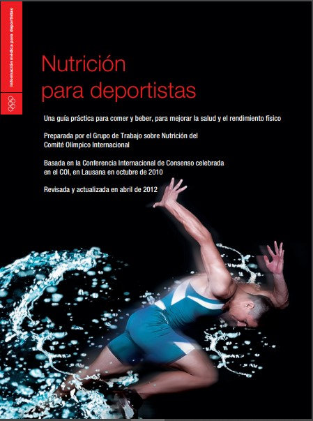

Semana 2
DEFINICION DEL PROBLEMA
INCIDENCIA:
El Instituto Peruano del Deporte, llamado así desde el 12 de Junio de 1981, es el ente rector del Sistema Deportivo Nacional; según su propio portal Web, constituye un Organismo Público Descentralizado con rango ministerial adscrito al Ministerio de Educación, con autonomía técnica, funcional y administrativa para el cumplimiento de sus funciones. En el Instituto Peruano de Deporte, se encuentra la Dirección Nacional de Servicios Biomédicos (DIREB). Este es el órgano de línea encargado de la asistencia biomédica al deportista y contribuye a la preservación de la salud en la práctica del deporte. Dentro de esta dirección, se evalúa a los deportistas calificados tanto antropométrica como bioquímicamente, las constantes evaluaciones y mediciones antropométricas a los deportistas calificados son procesos de larga duración y que requieren cierta exactitud dentro de esta.
¿Dónde se encuentra el problema?
Resulta que el personal encargado de esta labor antropométrica es escaso comparado al trabajo que se tiene: Existen 43 mediciones generales que se hace a cada deportista, aparte que los controles antropométricos, dependiendo de la disciplina y de los eventos que haya, ameritan cierta frecuencia. Entonces en este caso, este año se realizaron los juegos panamericanos, con más de 6 mil deportistas, y parapanamericanos, con 1980 deportistas, según estima La República. Por lo que hay una gran cantidad de deportistas calificados que requerirán de estos controles. Se mencionó en el instituto que la IPD tiene el trabajo de evaluar datos antropométricos de 600 deportistas calificados, cada control consta de aprox. 15-20 minutos por deportista, eso sería 9000 minutos como mínimo, y sería un problema porque el tiempo y el personal no es suficiente para cubrir cada control necesario, los nutricionistas y el personal encargado tienen que anotar a mano todas las 43 mediciones, en digital puede haber cierto error de escritura, y ahí es donde recaen esos 15-20 minutos. Esta situación del tiempo, a pesar de ser importante, es un problema secundario con respecto al problema principal.
Al evaluar el perfil antropométrico de cada deportista, la información recopilada es llevada a una plantilla que se basa solo en tablas de Microsoft Excel. El software usado no es completamente eficiente para ayudar a los médicos y nutricionistas a realizar un correcto diagnóstico y análisis de la progresión de los deportistas calificados. Entonces el objetivo de incrementar el número de deportistas calificados y de alto nivel, mediante un trabajo multidisciplinario, a través de atenciones en medicina deportiva (IPD-Portal Web) no sería tan eficiente.
Además, para evaluar ciertos parámetros más complejos de los deportistas, se realizan las medidas con otros equipos y softwares para la obtención de una mejor data. Entonces, en el IPD se hacen requerimientos anuales de materiales, instrumentos y softwares, pero la mayoría de veces no hay lo requerido, según el médico deportivo Giacomo Lavaggi. No hay un proveedor de las maquinarias y softwares que faciliten las mediciones, y tampoco hay softwares antropométricos que marquen la diferencia física.
Se trabaja con ciertos softwares necesarios pero hay algunos muy importantes como el Anthro Plus OMS (World Health Organization), que incluso cuenta con un módulo para el análisis de datos de encuestas de poblaciones sobre el estado nutricional. Lamentablemente no se trabaja mucho con él debido a que la población en promedio del IPD es de mayores de 15 años, aunque haya gimnastas y escolares menores en los que sería importante evaluarlos dentro de este software.

Figura 1. Definición del problemática y factores asociados.
Estos problemas se basan principalmente por la falta de apoyo económico. Si hablamos de salud, el PIM del MINSA para el año 2018 se redujo en 4,6% en relación al monto del año 2017, aunque para este año logró un incremento al 12% (El Comercio,2018). En cuanto a deporte, se invierten $10 millones, la tercera parte del país n°10 en el top 10 de países latinoamericanos que invierten en deporte (Portal PQS-2019).
Comparación con países de latinoamérica
Ranking de los diez países que más invierten en deporte por año:
Figura 2. Lista de inversión en deporte de países de Latinoamérica.
A nivel regional, las situaciones en cuanto a organismos encargados de los deportes son disímiles. Como en Chile y Bolivia, ambos tienen ministerio de deporte desde el año 2013 y 2014 respectivamente. Según el diario argentino El Cronista, también en uruguay existe la Secretaría Nacional del Deporte: un órgano que depende de la Presidencia. En Brasil hubo el ministerio de deportes hasta el año presente, y en Ecuador hasta a mediados de 2018. Argentina cuenta con la Agencia de Deporte Nacional, y se espera ser Ministerio de Deportes pronto. En Venezuela hubo ministerio de deporte hasta 2014. Colombia tiene desde 1968 a Coldeportes, que depende de la Presidencia. Nosotros al igual que Colombia, tenemos como organismo descentralizado al IPD, adscrito al Ministerio de Educación del Perú.
IMPACTO SOCIAL
El impacto del espectáculo deportivo sobre la población ha atraído a los medios de comunicación, dotando al deporte de un poder difícilmente superable como medio de influenciar a las masas. El deporte es uno de los poderes más importantes como medio de comunicación social. El espectáculo deportivo sigue siendo para la gran mayoría el opio del pueblo, una distracción para evadirse y no pensar ni actuar en relación a los problemas reales. Por el contrario la práctica conlleva una mejora integral del estado físico y emocional a todos los niveles, llevando a las personas a estar, participar e interactuar en un entorno vital. Si ésto es así, la Unidad de Planeamiento Oficina de Planificación y Presupuesto del IPD pregunta ¿por qué no se promociona más la práctica que el espectáculo?
Podemos destacar el impacto social dentro de los Juegos Panamericanos Lima 2019 y de la clasificación de Perú al Mundial Rusia 2018.
En el primero, los números cuentan el impacto mismo(Lima 2019-2019):
- MÁS DE 740 MIL ESPECTADORES EN LAS SEDES
- SE ROMPIERON 80 RÉCORDS PANAMERICANOS Y 175 PARAPANAMERICANOS
- 54 MEDALLAS CONSIGUIERON LAS DELEGACIONES PERUANAS
Esto concluye con que la mejora de los niveles de competitividad y de las marcas individuales de los deportistas se relaciona directamente con la dotación de servicios adecuados y de calidad para su preparación para la alta competencia. Entonces esa es la parte del impacto que puede relacionarse con nuestra problemática.
IMPACTO ECONÓMICO
En el impacto social comentamos acontecimientos como LIMA 2019 y RUSIA 2018, en el impacto económico también tuvieron papeles importantes.
Según el diario El Peruano, la participación del Perú en el Mundial tiene un efecto dinamizador en su actividad económica. Tiene un aporte de hasta 0.5 puntos porcentuales al producto bruto interno (PBI), cerca de 1,163 millones de dólares.

Figura 3. Presupuesto para los juegos panamericanos.
Según el Comité Organizador de los Juegos (COPAL) recopilados por Mercados & Regiones(2019), el presupuesto ejecutado en infraestructura definitiva (construcción y remodelación), infraestructura temporal y gastos operativos bordea los US$ 1,000 millones, monto menor a los S/ 4,300 millones (US$ 1,280 millones) presupuestados inicialmente. Lo anterior representaría un ahorro de 21%, lo que contrasta con los juegos panamericanos de Toronto 2015 y Guadalajara 2011, en dónde la inversión ejecutada superó en 81% y 300% a la inversión inicial, respectivamente.
Figura 3. Inversión en infraestructura deportiva para los juegos panamericanos.
El impacto económico de los Juegos Lima 2019 bordearía los S/ 5,000 millones, monto equivalente al 0.7% del PBI, de acuerdo a estimados del COPAL.
Si bien la mayor parte de la inversión se concentró durante el 2018 (S/ 1,714 millones) y el primer semestre del 2019, su aporte fue poco significativo en términos anuales -el Ministerio de Economía (MEF) estimó un monto equivalente al 0.3% del PBI en el 2018, incluyendo obras viales.
IMPACTOS AMBIENTALES
El impacto social del deporte en Perú tiene que ver con el impacto ambiental. Los factores que podrían estar influyendo en un aumento cada vez mayor de la relación entre el medio ambiente y el deporte, son:
- La mayor afluencia de población al medio natural.
- La crisis del modelo de ciudad moderna.
- La importancia del ocio activo.
- El desarrollo del concepto de ecología deportiva.
- El aumento de los medios para el desarrollo de una educación ambiental.
- La accesibilidad a la práctica deportiva en el medio natural de toda la población.
- La protección de los espacios naturales, reglamentación del uso y disfrute de estos.
- Y la proliferación de empresas de actividades en el medio natural con una mayor dimensión profesional y comercial (Rebollo S. 2002).
Este aumento de la relación entre el medio ambiente y el deporte posibilita un fenómeno social, que consiste en el traslado masivo y de forma temporal al medio natural, coincidiendo este traslado con las temporadas que conocemos por vacaciones de verano, semana santa, navidad, fines de semana, etc.
La unión del medio ambiente y el deporte comienza a tener protagonismo en la llamada civilización del ocio. Hoy en día podemos asumir el concepto de ocio como el expresado por Dumazeider (1972), como el tiempo libre dedicado al descanso, diversión y el desarrollo formacional. El deporte como actividad de ocio cobra cada vez más importancia en el ranking de actividades realizadas en el tiempo libre y así lo demuestran los numerosos estudios que encontramos en el panorama nacional (García Ferrando, 1997). Entonces, el impacto social que tiene el deporte en la población peruana implica un impacto en el ambiente.
Parte de la inversión (impacto económico) en los juegos panamericanos tiene un aporte al impacto ambiental, al mejorar ciertos ambientes, carreteras y avenidas en Lima.
Figura 4. Inversión en obras viales para los juegos panamericamos.
CONCLUSIÓN
Aún sabiendo el impacto generado en el país por el deporte, y dándonos cuenta que favorecerá en un futuro la inversión en este sector, tanto como en el sector salud, vemos que detrás del hecho de reconocer deportistas calificados, podríamos encontrar otras causas que afectan al bajo nivel competitivo de los deportistas, y por ende menor atención e inversión en ellos. Esto quiere decir que hay mucho aún por trabajar y mejorar en el ámbito deportivo y salud deportivo. Nótese que en el diagrama hecho por el Programa Presupuestal para el IPD 2019 destaca un cuadro de ESCASA PROVISIÓN DE RECURSOS BIOMÉDICOS. Entonces sí hay una relación con respecto a la progresión de deportistas calificados con la falta de recursos para la medición e interpretación de datos antropométricos.
Figura 5. Factores asociados al bajo nivel competitivo de deportistas peruanos a nivel internacional.

ESTADO DEL ARTE
1. MySignals
MySignals es la idea ganadora del Premio eSalud 2016 a la mejor iniciativa que revolucione los tratamientos médicos organizado por la Asociación de Investigadores en eSalud (AIES). Esta innovación consta de un sistema de 15 sensores para medir 20 parámetros biomédicos, tales como: ritmo cardiaco, glucosa, flujo de aire, oxígeno en sangre, presión sanguínea, capacidad pulmonar, temperatura, electrocardiograma, electromiograma, peso, masa ósea, grasa corporal, masa muscular, agua corporal, grasa visceral, tasa metabólica basal e índice de masa corporal. Todos estos parámetros son enviados a la nube de tal forma que un especialista pueda interpretarlos en tiempo real; además, ésta información está disponible para ser revisada por el usuario final. Y, como valor agregado, todas las conexiones operan en una unidad central que monitorea el flujo de datos.
Figura 6. Ganadores del concurso eSalud con la idea de innovación MySignals. Fuente: https://laesalud.com/congreso/2016/premios-esalud/ehealth-awards-2016-boehringer-ingelheim-mysignals-sensores-parametros-biomedicos/
2. Guía práctica de deportistas de alto rendimiento
La Guía de Nutrición para deportistas de alto rendimiento propuesto por el Grupo de Trabajo sobre Nutrición del Comité Olímpico Internacional fue propuesta en 2012 como preparación para los Juegos Olímpicos de Londres de ese año. En esta guía se especifica la cantidad de energía que el organismo debe producir dependiendo de la actividad física que se realiza, como se puede mantener esa energía para evitar consecuencias como pérdida de masa ósea o el deterioro de actividades hormonales, inmunológicas y metabólicas. Además, se clarifica como mantener o ganar musculatura y perder grasa corporal, la cual, es la que otorga peso por lo general a los deportistas. NOTA: Si bien esta solución no es un sistema para la adquisición de parámetros biométricos, se desea tener en cuenta que la información brindada por esta organización soluciona indirectamente problemas relacionados con el desarrollo físico de los atletas, por lo que siguiendo una guía básica y manteniendo un control periódico se puede mejorar la toma de los datos biométricos de los cuales se basa el problema del proyecto.
Figura 7. Cubierta de guía de nutrición para deportistas.Fuente: http://deporte.aragon.es/recursos/files/documentos/doc-areas_sociales/deporte_y_salud/guia_nutricion_deportistas.pdf Fuente: http://deporte.aragon.es/recursos/files/documentos/doc-areas_sociales/deporte_y_salud/guia_nutricion_deportistas.pdf
3. Sistemas Biométricos
Los sistemas biométricos son aquellos capaces de reconocer una característica exclusiva de una persona, y, en especial la revisión que se presenta en esta sección analiza diferentes formas de sistemas, por ejemplo: reconocimiento de huella dactilar, reconocimiento de cara. Reconocimiento de iris, retina, geometría de dedos y manos, autentificación de voz y reconocimiento de firma. Cada uno de estos sistemas consta de dos partes fundamentales en contexto; el funcionamiento y los sensores utilizados para hallar los parámetros. La morfología de la persona de la cual se obtienen dichos datos es la información a tratar más importante del sistema, y la que influirá en la decisión del tratamiento de datos.

Figura 8. Diagrama correspondiente a cámara utilizada como sensor óptico. Fuente: https://www.dsi.uclm.es/personal/MiguelFGraciani/mikicurri/Docencia%20/Bioinformatica/web_BIO/Documentacion/Trabajos/Biometria/Trabajo%20Biometria.pdf
4. Aplicando las tecnologías de información para la gestión de deportistas de alto rendimiento
Es un sistema multiuso que busca crear una base de datos antropométricos de cada deportista. Como mencionan Fuentes Covarrubias et al. (2018) el propósito del proyecto es monitorear los avances y resultados logrados, así como generar un historial y un modelo de proporcionalidad antropométrica para deportistas. La aplicación permite acceder al sistema mediante un Login y añadir información personal y de identificación de los deportistas, así como registro deportivo, médico y físico. El lenguaje de programación usado para la aplicación web fue HyperText Markup Language (HTML) y la herramienta de software Axure para permitir la interacción amigable con el usuario.
Figura 9. Datos de entrenamiento del deportista. Fuente: https://doi.org/10.33412/idt.v14.2.2068
5. Software Anthro Plus
Es un programa creado por la Organización Mundial de la Salud que permite comparar datos de peso, altura y longitudes con estándares de niños y adolescentes de 1 a 19 años con estándares de crecimiento de niños. Permite el ingreso de una base de datos en formato Texto Unicode acerca de parámetros como peso, altura según edad, talla así como algunas otras mediciones de pliegues cutáneos y perímetros (individuales como grupales). Con ello, el programa realiza cálculos y luego análisis estadísticos mediante gráficos e indicadores para que puedan ser interpretados.


Figura 10. Software Anthro Plus. Fuente: https://www.who.int/growthref/tools/en/
6. Fraccionamiento de la Masa Corporal: Un Nuevo Método para Utilizar en Nutrición, Clínica y Medicina Deportiva
Cómo lo expresan los autores William D. Ross y Deborah A, “el método de 5 masas fraccionales (piel, tejido adiposo, muscular, óseo y residual) es considerado una parte del proceso de desarrollo de los modelos antropométricos de cálculo de composición corporal, y no una solución definitiva”. En su artículo científico, refieren que es un método simple y poco costoso, utilizando protocolos de medición standard, validados por la Sociedad Internacional de Avances en Cineantropometría (I.S.A.K.).
7. STYKU. Visualize yourself in 3D.
Consiste en un escáner corporal 3D que captura las medidas corporales reales de los clientes, como: de cintura, pecho, muslos, etc. Por lo que facilita la información necesaria y detallada que se requiere para ofrecer a los clientes un servicio de asesoramiento personalizado y de gran precisión.
Según Alba Blanco de la Universidad Isabel I, STYKU es la última incorporación a los servicios de instalaciones deportivas en EE.UU, creado por Microsoft.
La tecnología Styku consigue crear un modelo idéntico del cuerpo humano en 3D, gracias a dicho modelo, se logra extraer de una forma precisa cientos de medidas en pocos segundos.
Métodos de medición como la bioimpedancia y antropometría en general, son propensos al error humano; Sin embargo, Styku detecta y mide automáticamente en pocos segundos. Además genera una interpretación de los resultados en el cual los clientes pueden ver el desarrollo a lo largo del tiempo.
Figura 11. Tecnología Styku. Fuente: https://laeradeladigitalizaciondeportiva.home.blog/2018/11/25/styku-avance-en-la-salud-deportiva-junto-al-3d/
REFERENCIAS
INSTITUTO PERUANO DEL DEPORTE. (s.f.). RESEÑA HISTÓRICA- INSTITUTO PERUANO DEL DEPORTE. Recuperado de https://www.ipd.gob.pe
Redacción, La República. (2019, 29 julio). Juegos Panamericanos: conoce qué países participan en Lima 2019. Recuperado de https://larepublica.pe/deportes/2019/07/23/paises-participantes-juegos-panamericanos-2019-selecciones-y-equipos-que-participan-en-evento-deportivo-argentina-mexico-colombia-espana-chile-atmp/
World Health Organization (2019). Referencia de crecimiento 5-19 años. Recuperado de: https://www.who.int/growthref/tools/en/
Macera, El Comercio. (2018, 27 febrero). ¿Cuánto dinero destina el Estado al sector Salud? Recuperado 8 septiembre, 2019, de https://elcomercio.pe/economia/dia-1/dinero-destina-sector-salud-noticia-500315
Portal PQS. (2019, 24 julio). ¿Sabes cuáles son los países latinoamericanos que más invierten en deporte? Recuperado 8 septiembre, 2019, de https://www.pqs.pe/economia/conoce-paises-latinoamericanos-que-mas-invierten-en-deporte
FRANCISCO LLORENS, El Cronista. (2019, 30 enero). De posible ministerio a agencia: ¿qué status tiene Deportes en otros países? Recuperado 9 septiembre, 2019, de https://www.cronista.com/economiapolitica/De-posible-ministerio-a-agencia-que-status-tiene-Deportes-en-otros-paises-20190130-0043.html
Lima 2019. (2019, 7 septiembre). Los números de Lima 2019 que debes conocer. Recuperado de https://www.lima2019.pe/magazine/4-cifras-juegos-lima-2019-superaron-expectativas
El Peruano. (s.f.). Impacto económico del Mundial. Recuperado 9 septiembre, 2019, de http://www.elperuano.pe/noticia-impacto-economico-del-mundial-67172.aspx
Mercados & Regiones (2019, 12 julio). Impacto Económico de los Juegos Panamericanos Lima 2019 | | Mercados &. Recuperado de https://www.mercadosyregiones.com/2019/07/12/impacto-economico-de-los-juegos-panamericanos-lima-2019/
Rebollo, S. (2002, febrero). Problemática medioambiental y práctica deportiva. Recuperado de https://www.efdeportes.com/efd45/medioamb.html
DUMAZEIDER (1972). Vers une civilisation du loisir. Paris: Seuil.
GARCÍA FERRANDO, M. (1997). Los españoles y el deporte 1980-1995. Un estudio sociológico sobre comportamiento, actitudes y valores. Valencia: Tirant lo blanch.
INSTITUTO PERUANO DEL DEPORTE. (2018). Programa Presupuestal para el Instituto Peruano de Deporte 2019 – 0101. Recuperado de http://www.ipd.gob.pe/images/PP2018.pdf
Congreso eSalud. Un sistema de sensores para medir 20 parámetros biomédicos, premio eSalud 2016. Consultado: 02 de Setiembre de 2019. Disponible en: https://laesalud.com/congreso/2016/premios-esalud/ehealth-awards-2016-boehringer-ingelheim-mysignals-sensores-parametros-biomedicos/
Grupo de Trabajo sobre Nutrición del Comité Olímpico Internacional. 2012. Nutrición para deportistas. Consultado: 4 de Setiembre de 2019. Disponible en: http://deporte.aragon.es/recursos/files/documentos/doc-areas_sociales/deporte_y_salud/guia_nutricion_deportistas.pdf
Tolosa B., Giz Á. Sistemas biométricos. Consultado: 4 de Setiembre de 2019. Disponible en: https://www.dsi.uclm.es/personal/MiguelFGraciani/mikicurri/Docencia%20/Bioinformatica/web_BIO/Documentacion/Trabajos/Biometria/Trabajo%20Biometria.pdf
Fuentes, A., Fuentes, G., Fuentes, J., Fuentes, R. (2018). Aplicando las tecnologías de información para la gestión de deportistas de alto rendimiento. Revista de I+D tecnológico, vol. 14. doix: https://doi.org/10.33412/idt.v14.2.2068
World Health Organization (2019). Referencia de crecimiento 5-19 años. Recuperado de: https://www.who.int/growthref/tools/en/
Blanco, Alba & Universidad Isabel I.. (2018a, 25 noviembre). STYKU…. Avance en la salud deportiva junto al 3D.. Recuperado 8 septiembre, 2019, de https://laeradeladigitalizaciondeportiva.home.blog/2018/11/25/styku-avance-en-la-salud-deportiva-junto-al-3d/
William D Ross y Deborah A Kerr (1993). Fraccionamiento de la Masa Corporal: Un Nuevo Método para Utilizar en Nutrición, Clínica y Medicina Deportiva. PubliCE. 0. Recuperado de: https://g-se.com/fraccionamiento-de-la-masa-corporal-un-nuevo-metodo-para-utilizar-en-nutricion-clinica-y-medicina-deportiva-261-sa-Q57cfb27120415